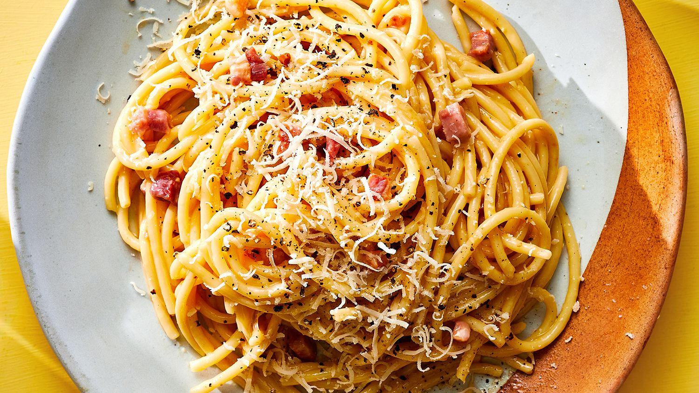

Carbonara

Description
Spaghetti carbonara is an Italian main course consisting of spaghetti (long thin strands of pasta) with bacon and a creamy sauce made from eggs, Pecorino or Parmesan and black pepper. The dish is probably from Rome.
Ingredients:
- 350g spaghetti
- 100g pancetta or becon
- 3 large eggs
- 50g pecorino cheese or parmesan
- 20g olive oil
Steps:
- Put a large saucepan of water on to boil.
- Finely chop the 100g pancetta or bacon and finely grate 50g pecorino cheese.
- Beat the 3 large eggs in a medium bowl and season with a little freshly grated black pepper. Set everything aside.
- Add 1 tsp salt to the boiling water, add 350g spaghetti and when the water comes back to the boil, cook at a constant simmer, covered, for 10 minutes or until al dente (just cooked).
- While the spaghetti is cooking, fry the pancetta. Drop 20g olive oil into a large frying pan or wok and, as soon as the olive oil has warmed up, tip in the pancetta.
- Leave to cook on a medium heat for about 5 minutes, stirring often, until the pancetta is golden and crisp.
- Keep the heat under the pancetta on low. When the pasta is ready, lift it from the water with a pasta fork or tongs and put it in the frying pan with the pancetta. Don’t worry if a little water drops in the pan as well (you want this to happen) and don’t throw the pasta water away yet.
- Mix most of the cheese in with the eggs, keeping a small handful back for sprinkling over later.
- Take the pan of spaghetti and pancetta off the heat. Now quickly pour in the eggs and cheese. Using the tongs or a long fork, lift up the spaghetti so it mixes easily with the egg mixture, which thickens but doesn’t scramble, and everything is coated.
- Add extra pasta cooking water to keep it saucy (several tablespoons should do it). You don’t want it wet, just moist.
- Use a long-pronged fork to twist the pasta on to the serving plate or bowl. Serve immediately with a little sprinkling of the remaining cheese and a grating of black pepper.
Go Back